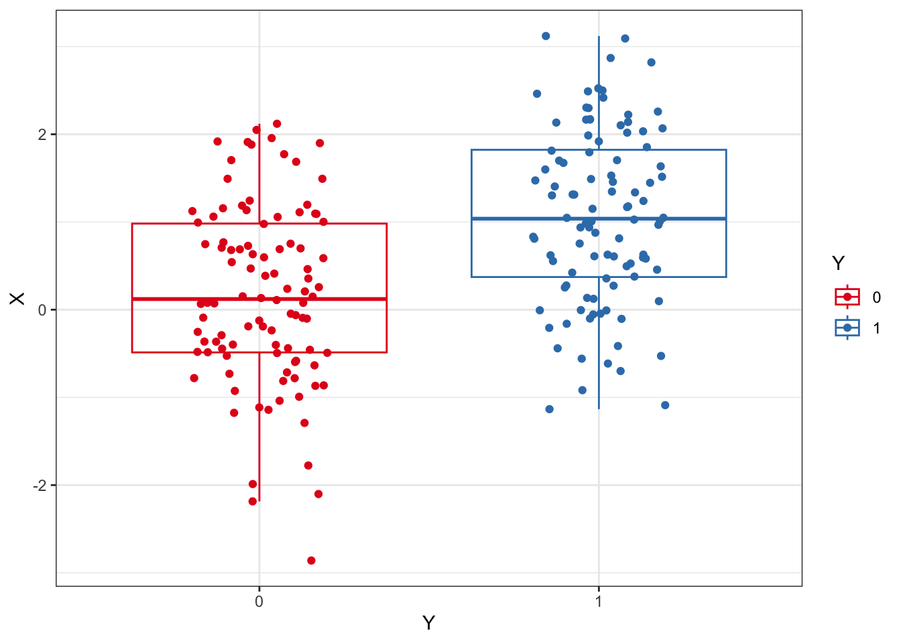
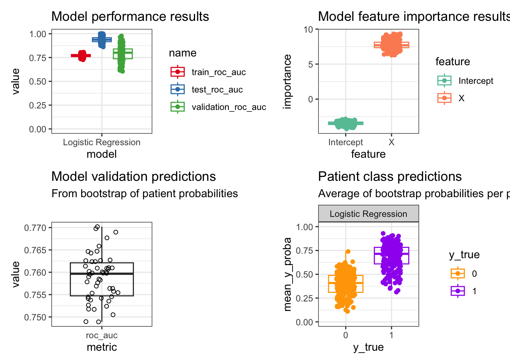

Show The Code
import numpy as np
N=100
X1 = np.random.normal(loc=0,scale=1,size=N)
X2 = np.random.normal(loc=1,scale=1,size=N)
X = np.concatenate([X1,X2])
Y = np.concatenate([np.repeat(0,N),np.repeat(1,N)])We start out with a dataset where we want to evaluate an outcome, Y, to be predicted by an independent variable, X. In this example, X determines Y and so we expect Y to be predicted by X to some degree. MCCV can be used to quantify that prediction. We’ll refer to the observations as patients, as you can view the dataset applying to patients experiencing an outcome during or at the end of a clinical trial.
Below, I’m demonstrating how I would go between Python and R, but you can stay solely in R or Python.

library(magrittr)
p1 <- reticulate::py$ml_df %>%
tidyr::pivot_longer(
cols = dplyr::contains('roc')
) %>%
dplyr::mutate(
name = factor(name,levels=c(
"train_roc_auc","test_roc_auc",
"validation_roc_auc"
))
) %>%
ggplot(aes(model,value,color=name)) +
geom_boxplot(alpha=0) +
geom_point(aes(group=name),
position=position_jitterdodge(
dodge.width = 0.7,
jitter.width = 0.1
)
) +
scale_color_brewer(palette="Set1") +
scale_y_continuous(limits=c(0,1)) +
theme_bw() +
labs(title="Model performance results")
p2 <- reticulate::py$f_imp_df %>%
ggplot(aes(feature,importance,color=feature)) +
geom_boxplot(alpha=0) +
geom_point(position=position_jitter(width=0.2)) +
scale_color_brewer(palette="Set2") +
theme_bw() +
labs(title="Model feature importance results")Warning in py_to_r.pandas.core.frame.DataFrame(x): index contains duplicated
values: row names not setp3 <- reticulate::py$preds_df %>%
ggplot(aes(metric,value)) +
geom_boxplot(alpha=0) +
geom_point(pch=21,
position=position_jitter(width=0.2)) +
theme_bw() +
labs(title="Model validation predictions",
subtitle="From bootstrap of patient probabilities")
p4 <- reticulate::py$pt_preds_df %>%
dplyr::mutate(
y_true = factor(y_true,levels=c(0,1))
) %>%
dplyr::group_by(bootstrap,model,y_true) %>%
dplyr::summarise(
mean_y_proba = mean(y_proba),
.groups = "drop"
) %>%
ggplot(aes(y_true,mean_y_proba,color=y_true)) +
geom_boxplot(alpha=0) +
geom_point(position=position_jitter(width=0.2)) +
scale_color_manual(values=c("orange","purple")) +
facet_wrap(~model) +
scale_y_continuous(limits=c(0,1)) +
theme_bw() +
labs(title="Patient class predictions",
subtitle="Average of bootstrap probabilities per patient")
library(patchwork)
p1 + p2 + p3 + p4 + plot_layout(ncol = 2)
These plots are an overview to the main results generated by this algorithm:
Some observations from this small example:
As expected, the testing performance is much higher than the model training performance. The model validation performance has more variance.
Y is directly derived from X and so we see a large importance for X in predicting Y. The intercept doesn’t have much meaning in this contrived example, but could be meaningful depending on the dataset.
The performance after bootstrapping the patient probabilities has less variance compared to the first graph, but is within the middle 50% of that distribution. This performance measure should be used because it has reduced bias from sampling all computed patient probabilities.
The average patient probabilities across bootstraps show the average prediction by that classifier on an individual basis, as well as the per patient variance. This allows for examining further how variable a model can be for certain patient subpopulations for the classification task.
run_permuted_mccv:See the model evaluations and validations in these references for some ideas like model calibration and deriving model equations:
Giangreco, N.P., Lebreton, G., Restaino, S. et al. Alterations in the kallikrein-kinin system predict death after heart transplant. Sci Rep 12, 14167 (2022). https://doi.org/10.1038/s41598-022-18573-2
Giangreco et al. 2021. Plasma kallikrein predicts primary graft dysfunction after heart transplant. Journal of Heart and Lung Transplantation, 40(10), 1199-1211. https://doi.org/10.1016/j.healun.2021.07.001.